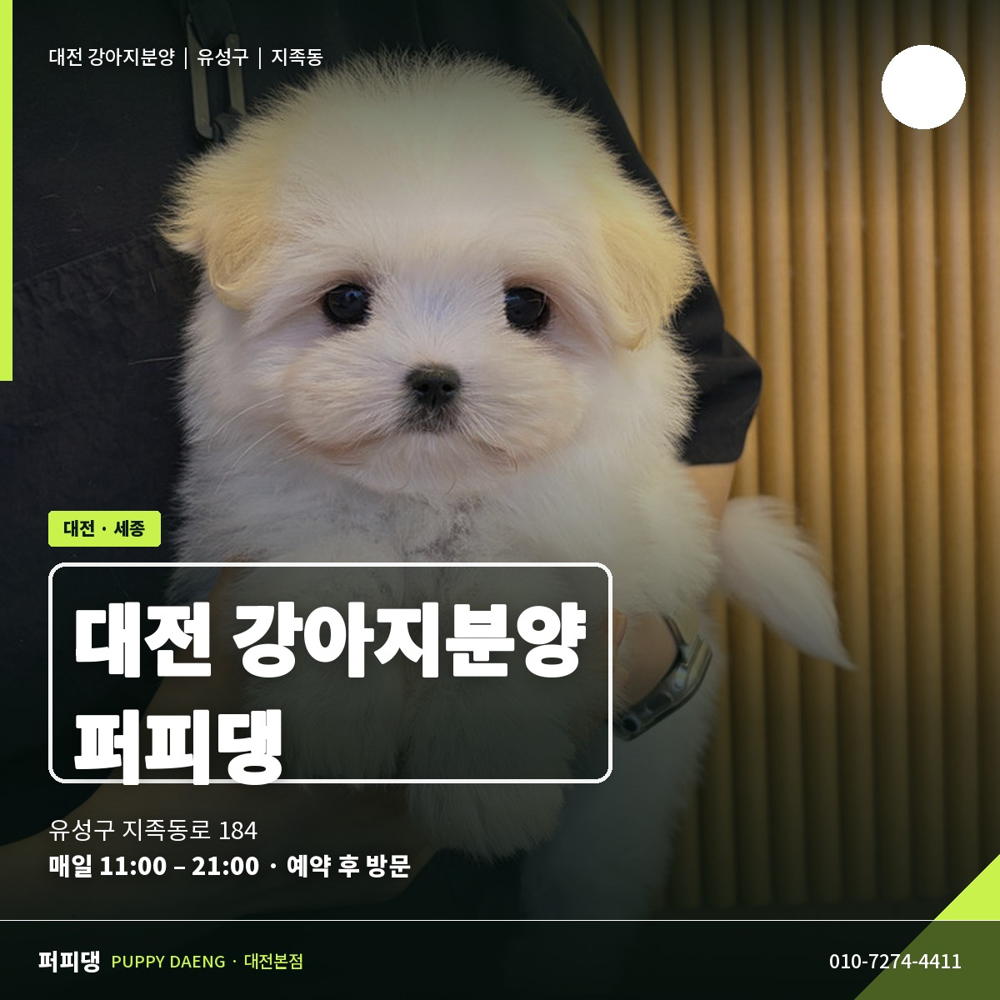
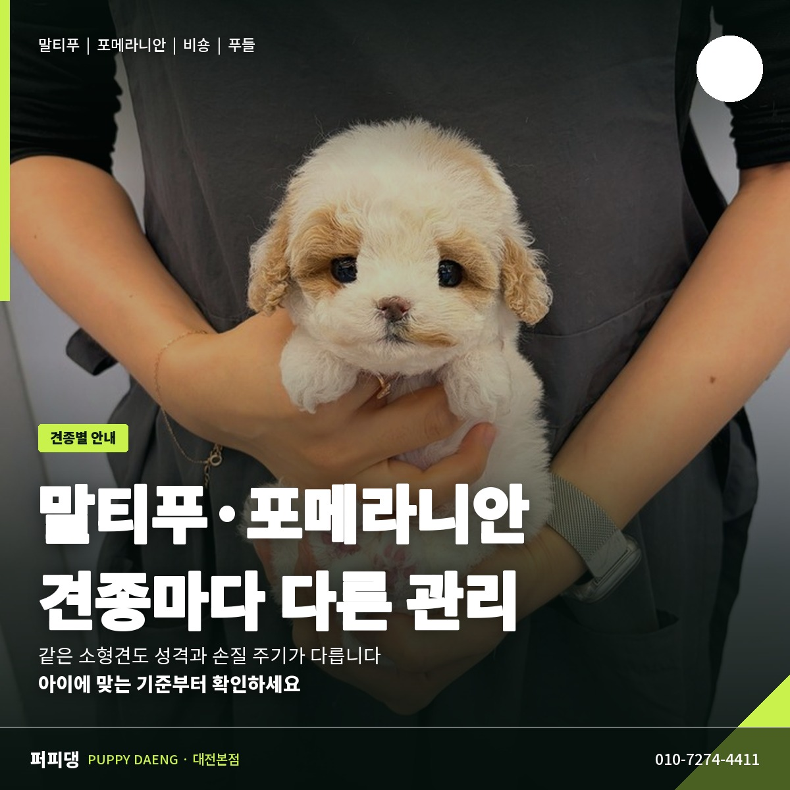
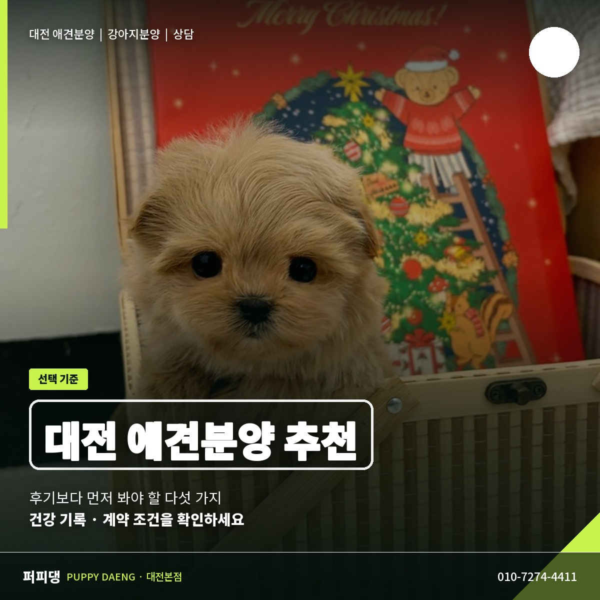
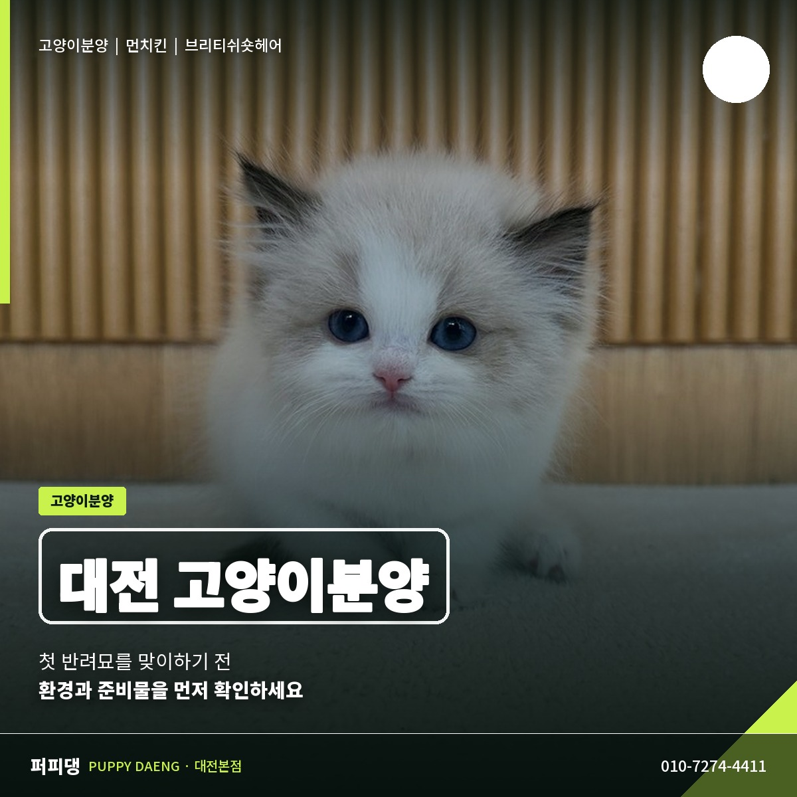
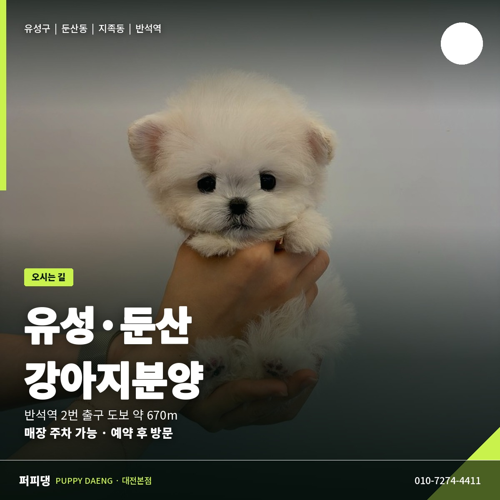
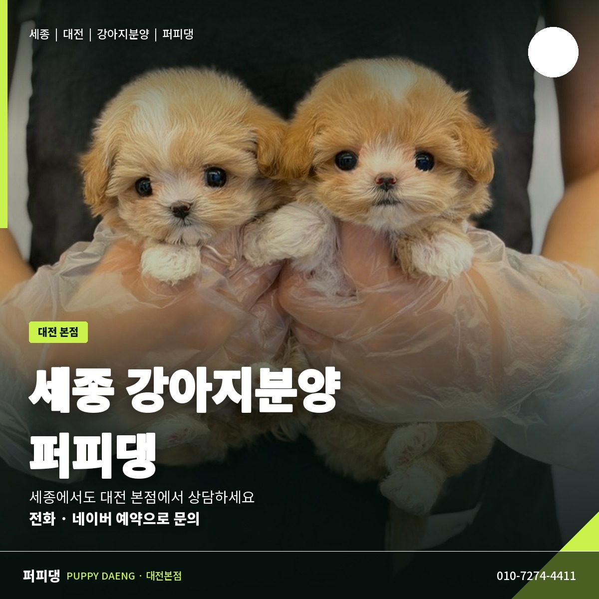

대전 강아지분양대전 강아지분양 퍼피댕, 첫 방문 전 확인할 다섯 가지
유성구 지족동로 184, 퍼피댕 안심분양소 대전본점입니다. 처음 방문하실 때 무엇을 보고 결정하면 좋은지, 상담 전에 미리 확인하면 도움이 되는 다섯 가지를 정리했습니다.
대전 강아지분양 · 고양이분양 상담 전에 읽어 보세요

대전 강아지분양유성구 지족동로 184, 퍼피댕 안심분양소 대전본점입니다. 처음 방문하실 때 무엇을 보고 결정하면 좋은지, 상담 전에 미리 확인하면 도움이 되는 다섯 가지를 정리했습니다.

견종별 분양말티푸와 포메라니안은 같은 소형견이지만 털 관리와 활동량, 성격이 다릅니다. 우리 집 생활 패턴에 어떤 아이가 맞는지 먼저 확인해 보세요.

분양 가이드사진과 후기는 마음이 가는지 알려 주지만, 건강 상태와 계약 조건까지 알려 주지는 않습니다. 결정 전에 직접 확인해야 하는 기준을 정리했습니다.

고양이분양고양이는 강아지와 준비물도, 첫 적응 방식도 다릅니다. 먼치킨·브리티쉬숏헤어·랙돌 같은 묘종을 알아볼 때 함께 보면 좋은 것들입니다.

오시는 길반석역 2번 출구에서 도보 약 670m, 매장 주차가 가능합니다. 유성·둔산·지족동에서 오시는 길과 방문 전 확인할 점을 정리했습니다.

세종 강아지분양세종에서도 대전 본점에서 상담하실 수 있습니다. 오시기 전에 전화나 네이버 예약으로 상담 시간을 먼저 확인하시면 편합니다.
방문 전에 예약하시면 기다리지 않고 상담받으실 수 있습니다.
퍼피댕 안심분양소 대전본점 · 최종 확인 2026년 11월 26일
대전 강아지분양을 알아보실 때 가장 먼저 고민하는 것은 “어디서, 어떤 기준으로 아이를 만나야 할까”입니다. 분양은 사진 한 장으로 결정하기보다 아이의 건강 상태와 접종 기록, 계약 조건, 그리고 분양 이후의 관리까지 함께 보는 일이 중요합니다.
퍼피댕 안심분양소 대전본점은 대전광역시 유성구 지족동로 184에서 강아지분양과 고양이분양 상담을 진행하고 있습니다. 이 글에서는 대전·세종에서 강아지분양을 알아보실 때 확인하면 좋은 기준을 순서대로 정리했습니다.
강아지분양 매장을 고를 때 가격만 비교하면 나중에 관리에서 어려움을 겪기 쉽습니다. 같은 견종이라도 아이마다 성격과 건강 상태가 다르고, 분양 이후에 필요한 관리도 다르기 때문입니다.
대전 강아지분양을 알아보실 때는 아래 다섯 가지를 먼저 확인해 보시길 권합니다.
✔ 방문 상담 가능 시간 확인 ✔ 예방접종 · 구충 기록 확인 ✔ 계약서에 적힌 조건 확인 ✔ 분양 후 연락할 창구 확인
🔝 맨 위로 이동분양 상담은 아이를 고르는 자리가 아니라, 이 아이를 우리 가정에서 키울 수 있는지 함께 확인하는 과정입니다. 퍼피댕은 상담에서 아이의 상태와 생활 습관을 먼저 확인하고, 보호자님의 주거 환경과 생활 패턴을 함께 이야기합니다.
■ 방문 상담 및 환경 확인 ■ 아이의 상태 · 성격 확인 ■ 건강검진 및 접종 기록 확인 ■ 분양 조건 확인 ■ 새 가정 준비 안내
| 확인 항목 | 확인하는 이유 |
|---|---|
| 예방접종 기록 | 접종 차수와 시기를 기록으로 확인 |
| 구충 · 기생충 관리 | 현재 관리 상태와 다음 일정 확인 |
| 눈 · 귀 · 피부 상태 | 초기에 발견해야 하는 질환 신호 확인 |
| 식사량과 배변 상태 | 소화 상태와 스트레스 여부 확인 |
| 활동량과 사람에 대한 반응 | 컨디션과 성격 파악 |
| 월령과 체중 | 성장 단계와 관리 난이도 확인 |
상담 시간은 아이의 상태와 질문에 따라 달라질 수 있습니다. 궁금한 점은 방문 전에 전화로 먼저 문의하셔도 좋습니다.
🔝 맨 위로 이동새 가정으로 이동하는 일은 아기 강아지에게 큰 변화입니다. 그래서 분양 전에는 건강 상태를 확인하는 과정이 반드시 필요합니다. 퍼피댕은 수의사 건강검진 후 분양을 안내하고 있습니다.
접종은 아이의 월령과 컨디션에 맞춰 진행되며, 차수와 시기는 아이마다 다를 수 있습니다. 상담 자리에서 현재 접종 기록과 다음 접종 예정일을 함께 확인하시고, 새 가정에서도 같은 일정으로 이어갈 수 있도록 병원을 미리 정해 두시면 좋습니다.
✨ 건강 기록 확인 ✨ 수의사 건강검진 후 분양 ✨ 추가금 없는 정직분양 ✨ 분양 후 관리 상담 ✨ 아이 상태에 맞춘 안내
✔ 접종 · 구충 기록 ✔ 눈 · 귀 · 피부 상태 ✔ 체온과 활동량 ✔ 식사와 배변 ✔ 보호자님께 남기는 관리 안내
🔝 맨 위로 이동분양 이후 첫 한 달은 아이가 새 환경에 적응하는 시간입니다. 이 시기에는 새로운 것을 한 번에 많이 바꾸지 않는 것이 좋습니다. 사료를 바꿀 때도 천천히 섞어 가며 바꾸고, 배변 위치와 잠자리를 먼저 정해 주세요.
👉 조용한 공간 마련 👉 사료 · 물 위치 고정 👉 배변 위치 학습 👉 접종 일정 확인 👉 컨디션 기록
| 시기 | 관리 포인트 |
|---|---|
| 첫 3일 | 조용한 공간에서 쉬게 하고, 물과 사료 위치를 고정 |
| 1주 차 | 배변 위치를 알려 주고 산책은 짧게 |
| 2주 차 | 사료 전환은 천천히, 컨디션과 배변 기록 |
| 접종 시기 | 다음 접종일을 확인하고 병원 예약 |
| 1개월 이후 | 정기 검진 · 미용 주기 정하기 |
※ 식사나 배변이 갑자기 달라졌을 때 ※ 기침 · 콧물 · 설사가 이어질 때 ※ 피부나 귀를 자주 긁을 때 ※ 접종 일정이 헷갈릴 때
🔝 맨 위로 이동퍼피댕 안심분양소 대전본점은 패키지·추가금 없는 정직분양과 거품 없는 안심분양가를 안내합니다. 상담에서 안내받은 조건과 다른 비용이 뒤에 붙지 않도록, 분양 조건은 계약 전에 확인하실 수 있습니다.
하나:) 수의사 건강검진 후 분양 둘:) 추가금 없는 정직분양 셋:) 분양 후 관리 상담 넷:) 호텔 · 미용 · 훈련 시설 이용 안내 다섯:) 강아지 · 고양이 함께 상담
대전광역시 유성구 지족동로 184 (반석동 580-96)
도시철도 1호선 반석역 2번 출구에서 도보 약 670m · 매장 주차 가능
매일 11:00 – 21:00 | 대표전화 010-7274-4411
🔝 맨 위로 이동A1.아이를 맞이할 공간과 사료, 배변패드 같은 기본 준비물을 미리 확인하시고 궁금한 점을 적어 오시면 상담이 짧아집니다. 방문 전 전화(010-7274-4411)로 상담 가능 시간을 확인하시면 좋습니다.
A2.네이버 예약이나 전화로 예약하시면 대기 없이 상담받으실 수 있습니다. 퍼피댕 대전본점은 매일 11:00부터 21:00까지 운영합니다.
A3.접종 차수와 시기를 기록으로 확인하는 것이 좋습니다. 아이마다 진행 상황이 다르므로 상담 시 현재 접종 기록을 함께 확인해 주세요.
A4.견종·묘종, 성별, 월령, 모색, 체형과 건강 상태에 따라 달라집니다. 퍼피댕은 패키지·추가금 없는 정직분양을 안내합니다.
A5.네. 퍼피댕은 강아지분양과 고양이분양을 함께 상담합니다. 먼치킨, 브리티쉬숏헤어, 랙돌, 러시안블루 등 묘종별 정보를 확인하실 수 있습니다.
A6.대전 도시철도 1호선 반석역 2번 출구에서 도보 약 670m 거리이고 매장 주차가 가능합니다. 세종에서는 차로 이동하시면 편합니다.
A7.분양 후 사료·배변·미용·호텔 이용 같은 관리 상담을 이어서 안내합니다. 매장에서 호텔·미용·훈련 시설 이용도 안내하고 있습니다.
대전광역시 유성구 지족동로 184에서 강아지분양과 고양이분양 상담을 하고 있는 퍼피댕 안심분양소 대전본점입니다. 처음 방문하시는 보호자님이 가장 많이 물어보시는 것이 “무엇을 보고 결정해야 하나요”입니다. 그래서 상담 전에 미리 확인하시면 도움이 되는 다섯 가지를 정리했습니다.
사진은 아이의 표정과 털 상태를 잘 보여 주지만, 눈과 귀의 상태, 활동량, 사람을 대하는 반응까지 알려 주지는 않습니다. 방문 상담은 그 부분을 확인하는 자리입니다.
퍼피댕은 수의사 건강검진 후 분양을 안내합니다. 예방접종과 구충 기록은 상담 자리에서 함께 확인하실 수 있고, 다음 접종 일정도 안내해 드립니다.
분양가와 함께 패키지나 추가금이 있는지 확인해 주세요. 퍼피댕은 패키지·추가금 없는 정직분양을 안내합니다. 계약 전에 조건을 확인하고 결정하시면 됩니다.
사료는 어떻게 바꾸는지, 배변 훈련은 언제 시작하는지, 미용은 어느 주기로 하는지 — 분양 이후에 생기는 질문은 생각보다 많습니다. 상담 창구가 계속 열려 있는지도 확인해 보세요.
아이가 예쁘다는 이유만으로 결정하기보다, 집을 비우는 시간과 활동량, 함께 사는 가족 구성을 먼저 생각해 보시길 권합니다. 상담에서 그 부분을 함께 이야기합니다.
말티푸와 포메라니안은 모두 작은 몸집으로 사랑받는 견종이지만, 준비해야 하는 것이 다릅니다. 퍼피댕 대전본점에서 상담하실 때 자주 나오는 질문을 기준으로 정리했습니다.
말티푸는 털이 잘 엉키는 편이라 빗질과 미용 주기가 중요합니다. 미용 주기를 어떻게 잡을지, 집에서 빗질을 얼마나 자주 할 수 있는지가 실제 생활 만족도를 크게 바꿉니다.
포메라니안은 작은 몸집에 비해 활동량이 있는 편이고 털갈이 시기가 뚜렷합니다. 산책 시간을 얼마나 낼 수 있는지, 털 관리를 감당할 수 있는지 함께 보시면 좋습니다.
비숑프리제, 미니비숑, 푸들, 토이푸들은 털 빠짐과 미용 스타일에서 차이가 있습니다. 같은 소형견이라도 손질 주기와 성격이 다르니, 두세 견종을 비교해 보시길 권합니다.
견종과 아이의 상태에 따라 분양 가능 여부와 조건이 달라질 수 있으므로, 방문 전에 전화(010-7274-4411)로 확인하시면 편합니다.
대전 애견분양을 검색하면 수많은 후기와 사진이 나옵니다. 후기는 분위기를 알려 주지만, 아이의 건강 기록과 계약 조건까지 대신 확인해 주지는 않습니다. 그래서 결정 전에 직접 확인해야 하는 기준을 정리했습니다.
접종 차수와 시기, 구충 여부를 기록으로 확인해 주세요. 말로만 “건강하다”고 하는 것과 기록이 남아 있는 것은 다릅니다.
분양가, 포함 항목, 추가금 여부가 계약서에 어떻게 적히는지 확인하세요. 퍼피댕은 패키지·추가금 없는 정직분양을 안내합니다.
동물판매업·동물위탁관리업 등록 번호를 확인하는 것은 기본입니다. 퍼피댕 대전본점은 동물판매업 제3670000-045-2023-0002, 동물위탁관리업 제3670000-048-2023-0005로 등록되어 있습니다.
분양 후에 사료·배변·미용·호텔 이용까지 상담이 이어지는지 확인해 보세요. 처음 한 달은 질문이 가장 많은 시기입니다.
집을 비우는 시간, 산책 가능 시간, 함께 사는 가족 구성이 아이의 성격과 맞는지가 장기적인 만족도를 결정합니다.
대전 유성구 지족동로 184에서 상담하실 수 있고, 네이버 예약이나 전화로 방문 시간을 정하실 수 있습니다.
고양이분양은 강아지분양과 준비물도, 첫 적응 방식도 다릅니다. 퍼피댕은 강아지와 고양이를 함께 상담하며, 먼치킨 · 브리티쉬숏헤어 · 랙돌 · 러시안블루 같은 묘종을 알아보시는 분들께 아래 내용을 먼저 안내합니다.
고양이는 높은 곳과 숨을 곳이 필요합니다. 캣타워를 둘 자리, 창문과 베란다 안전, 화장실 위치를 먼저 정해 두시면 적응이 빠릅니다.
새 환경에 온 고양이는 하루 이틀 숨어 지내기도 합니다. 억지로 꺼내지 말고 조용한 공간에서 스스로 다가오게 두는 것이 좋습니다.
눈곱, 콧물, 식사량, 화장실 사용 여부를 첫 2주 동안 기록해 두시면 병원 상담 때 도움이 됩니다. 묘종별로 주의할 부분이 다르므로 분양 상담에서 함께 확인해 드립니다.
고양이분양 상담도 대전본점에서 함께 진행합니다. 방문 전 전화(010-7274-4411)나 네이버 예약으로 시간을 확인해 주세요.
퍼피댕 안심분양소 대전본점은 대전광역시 유성구 지족동로 184에 있습니다. 유성구 · 둔산동 · 지족동에서 오시는 길과 방문 전 확인하실 점을 정리했습니다.
대전 도시철도 1호선 반석역 2번 출구에서 도보 약 670m입니다. 직진하시면 매장이 나옵니다.
네비게이션에 “지족동로 184” 또는 “반석동 580-96”을 검색하시면 됩니다. 매장 주차가 가능합니다.
반석2통 정류장에서 내리시면 가깝습니다. 정류장 위치는 네이버 지도에서 확인하실 수 있습니다.
아이의 분양 가능 여부와 상담 가능 시간은 그날 상황에 따라 달라질 수 있어, 방문 전에 전화로 확인하시면 헛걸음 없이 상담받으실 수 있습니다.
세종에서 강아지분양을 알아보시는 분들도 퍼피댕 대전본점에서 상담하실 수 있습니다. 세종특별자치시에서 차로 이동하시면 가까운 거리이고, 매장 주차도 가능합니다.
전화나 네이버 예약으로 시간을 정하시고, 방문하시면 상담과 함께 아이의 상태를 확인하실 수 있습니다. 상담 후 결정하셔도 되고, 조건을 확인한 뒤 다시 방문하셔도 됩니다.
대전광역시 유성구 지족동로 184. 네비게이션에 “지족동로 184”를 검색하시면 됩니다. 반석역 2번 출구에서 도보 약 670m 거리입니다.
전화 010-7274-4411 · 매일 11:00 – 21:00 · 네이버 예약 가능
제목·카테고리·본문을 적고 저장하면 사이트 게시판에 바로 추가됩니다.
빈 줄로 문단을 나누고, ## 제목은 소제목, - 내용은 목록으로 표시됩니다.
기본 배너를 고르거나 아래에서 사진을 올릴 수 있어요.
글 목록에서 수정하면 위의 작성 화면에서 내용을 고칠 수 있어요. 기본 6개 글을 삭제하면 사이트에서 숨겨집니다.
아래 SQL을 Supabase → SQL Editor 에서 한 번만 실행하면 게시판 저장소가 만들어집니다. (이미 만들었다면 다시 실행하지 않아도 됩니다.)
-- 불러오는 중…
admin 계정만 글을 쓸 수 있어요.
현재 로그인한 계정으로는 글을 저장할 수 없습니다.
Supabase 대시보드 → SQL Editor → New query 에 붙여 넣고 실행(Run)하세요. 누구나 글을 읽을 수 있고, admin@puppydaeng.app만 글을 쓰고 고치고 지울 수 있게 됩니다.
-- 불러오는 중…
복사했어요. Supabase SQL Editor 에 붙여 넣어 주세요.